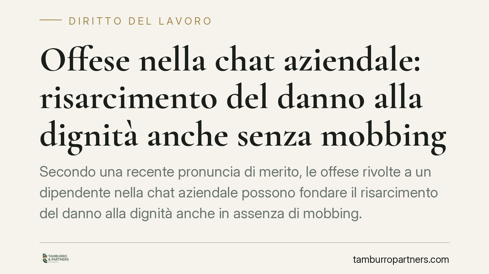

Offese nella chat aziendale: risarcimento del danno alla dignità anche senza mobbing
Secondo una recente pronuncia di merito, le offese rivolte a un dipendente nella chat aziendale possono fondare il risarcimento del danno alla dignità anche in assenza di mobbing. La decisione richiama la responsabilità del datore ex art. 2087 c.c. e incide sulla legittimità del licenziamento per comporto quando la malattia deriva dalla condotta vessatoria. Un tema che merita attenzione operativa.

Il caso
Secondo quanto riportato, la Corte d'Appello di Firenze (sentenza che risulta indicata come n. 71/2026, dato da verificare quanto a numero e anno di deposito prima di ogni utilizzo) si è pronunciata sulla posizione di un dipendente apprendista destinatario di offese all'interno della chat aziendale.
Il giudice avrebbe riconosciuto il risarcimento del danno alla dignità e annullato il licenziamento intimato per superamento del periodo di comporto, ritenendo che la malattia del lavoratore fosse riconducibile proprio alla condotta vessatoria del datore di lavoro.
Un punto va chiarito subito: la decisione non richiede l'accertamento del mobbing. È questo l'aspetto di maggiore interesse pratico.
Inquadramento normativo
La norma di riferimento è l'art. 2087 del Codice Civile, spesso definita "norma di chiusura" del sistema di tutela del lavoratore. Impone al datore di lavoro di adottare tutte le misure necessarie a tutelare l'integrità fisica e la personalità morale di chi lavora. È una norma ampia, che copre anche situazioni non espressamente tipizzate.
Il mobbing, invece, è una fattispecie più stringente: richiede una condotta sistematica, reiterata e sorretta da un intento persecutorio. Quando questi elementi mancano, la tutela antimobbing non scatta.
Lo sganciamento tra i due piani è il cuore della questione. L'art. 2087 c.c. può operare anche senza mobbing: ciò non significa, però, che la tutela sia automatica. Per ottenere il risarcimento restano comunque necessari tre elementi: la prova della condotta lesiva, la prova del danno effettivamente subito e la dimostrazione del nesso causale tra la prima e il secondo. Viene meno il requisito dell'intento persecutorio, non l'onere probatorio di fondo.
Sul fronte del licenziamento, rileva l'art. 2110 c.c., che disciplina il periodo di comporto, ossia l'arco temporale entro il quale il lavoratore assente per malattia conserva il posto. L'orientamento di legittimità è da tempo nel senso che non possono essere computate, ai fini del comporto, le assenze imputabili a una condotta illegittima del datore di lavoro. È un principio consolidato, non una novità: se la malattia nasce dalla violazione dell'art. 2087 c.c., quei giorni non "contano" contro il lavoratore.
Implicazioni pratiche
Per il datore di lavoro cambia la gestione delle comunicazioni interne. La chat aziendale non è uno spazio informale sottratto alle regole: i messaggi restano registrati e costituiscono prova documentale facilmente acquisibile in giudizio. Un tono offensivo reiterato, anche da parte di un singolo responsabile, può generare responsabilità in capo all'azienda.
Per il lavoratore, la pronuncia conferma che la tutela della dignità non passa necessariamente dalla difficile prova del mobbing. Resta però essenziale documentare la condotta e il danno.
Attenzione, infine, al collegamento con il comporto: un licenziamento formalmente regolare può risultare illegittimo se le assenze derivano da una patologia causata dall'ambiente di lavoro.
Cosa fare in concreto
- Conservate le comunicazioni. Salvate e, ove possibile, fate autenticare screenshot ed estratti della chat, con data, mittente e contesto.
- Documentate il danno. Raccogliete certificazioni mediche che evidenzino il nesso tra condizione lavorativa e patologia; il collegamento va provato, non solo affermato.
- Verificate i presupposti del comporto. Prima di valutare un licenziamento o di subirlo, controllate se le assenze siano imputabili alla condotta datoriale.
- Adottate (lato azienda) policy sulle comunicazioni interne. Regole chiare sull'uso delle chat e formazione dei responsabili riducono il rischio di contenzioso.
- Consigliamo di valutare la posizione con tempestività, dati i termini decadenziali per l'impugnazione del licenziamento.
Disclaimer
Contributo informativo a cura di Tamburro & Partners - Avv. Giuseppe Tamburro. Non costituisce parere legale.
Ogni storia di lavoro ha i suoi tempi.
Se gestisci HR e vuoi un confronto su contenzioso, ispezioni o licenziamenti, scrivi allo studio. Ti rispondiamo entro un giorno lavorativo.